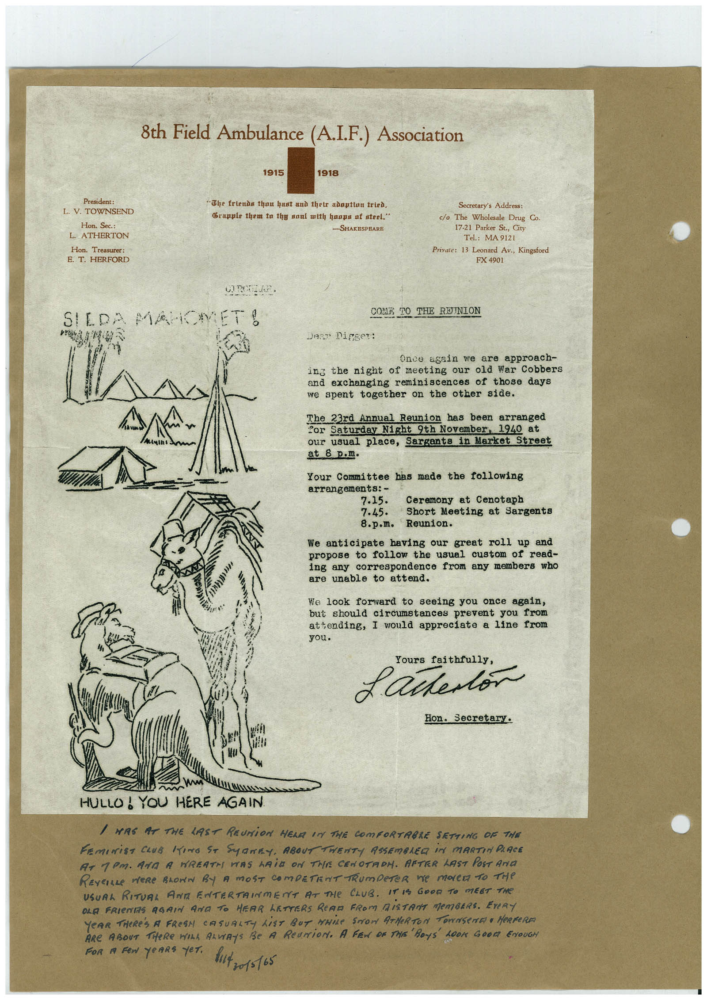

Book 1 · scan 078


Description
Transcription
Context
Review notes
Compare the machine draft with the scan. Handwriting and names need human review.
Artifacts
Edit the artifacts field in this note’s frontmatter to change these records. This summary is generated.
B01-S078-A01 — Certificate & Handwritten note — Book 1, scan 078
Types: Certificate, Handwritten note
Scope: Whole scanned page; individual items can be split out during review.
Caption: Not mapped yet.
Caption source: Not recorded yet.
Caption status: unmapped
Machine transcription
President: L. V. TOWNSEND Hon. Sec.: L. ATHERTON Hon. Treasurer: E. T. HERFORD 8th Field Ambulance (A.I.F.) Association 1915 1918 "The friends thau bast and their adoption tried. Crapple them to thy saul with hoops of steel." -SHAKESPEARE Secretary's Address: c/o The Wholesale Drug Co. 17-21 Parker St., City Tel.: MA 9121 Private: 13 Leonard Av., Kingsford FX 4901 SILDA MAROMET! 219 COME TO THE RETINION Dest Digger: Once again we are approach- ing the night of meeting our old War Cobbers and exchanging reminiscences of those days we spent together on the other side. The 23rd Annual Reunion has been arranged Cor Saturday Night 9th November, 1940 at our usual place, Sargants in Market Street at 8 p.m. Your Committee has made the following arrangements: - 7.15. Ceremony at Cenotaph 7.45. Short Meeting at Sargents 8.p.m. Reunion. We anticipate having our great roll up and propose to follow the usual custom of read- ing any correspondence from any members who are unable to attend. We look forward to seeing you once again, but should circumstances prevent you from attending, I would appreciate a line from you. Yours faithfully, £ artertor Hon. Secretary. HULLO! YOU HERE AGAIN / MRS AT THE LAST REUNiON HELA IN THE COmFORTABLE SETTING OF THE FEmINiST CLUB KING ST SyNEY, ABOUT TWENTY ASSEMBLEG iN MARTIN PLACE AT 1PM. ARA A NREAT PAS MAiD ON THE CENOTAOH. AFTER LAST POST ArIa REVEILLE MeRe BLOWN By A MOST COmPETENT TRumpeTER ne mOLe TO THe USUAL RITUAL ANA ENTERTAIMENT AT THE CLUB. IT IS GOOD TO MEET THE OLE FRIENTS AGAIN AND TO HEAR LETTERS READ FROM DiSTANT MEMBERS. EVeRY YeAR THeRE's A FRESN CASUALTY LiST BUT MHiLE STOW ATMeRTON TOWNSENET • HeRReRA ARE ABOUT THeRE WILA ALViAYS Be A ReUNiON. A FEN OR THE BOYS 100K 60017 ENOUGH FOR A FeN YeARS YeT. but zo1s165